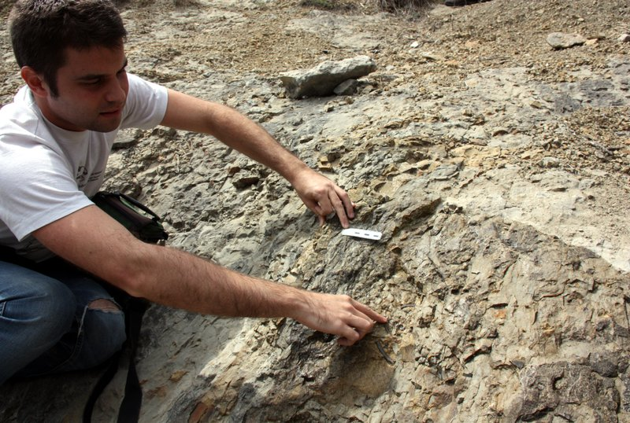

Contacte
Sóc un paleontòleg apassionat per l’estudi dels dinosaures i la divulgació científica.
- Nom: Dr. Fòssil Juràssic
- Professió: Paleontòleg
- Experiència: 10 anys d’excavacions
- Descobriment del fòssil més complet de triceratops a Catalunya
- Publicació a la revista "PaleoWorld" sobre hàbitats cretacis
- Coordinador del projecte "Fòssils i Futur" amb escoles locals

Visita el meu centre de recerca:
Museu ICP
Tornar a la pàgina principal